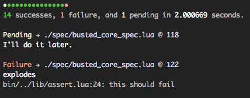

Busted 2.0
olivinelabs.com/busted
github.com/Olivine-Labs/busted
"Elegant Lua unit testing."

In The Beginning
, Busted was very simple.
We made changes and received some
pull requests.
So now Busted
has all these features...
And the codebase
looks like this.
Time to clean up busted, implement plugins, and decentralize code.
mediator_lua to the rescue!
Busted looks like
more like this now.
github/Olivine-Labs/busted
@ busted-v2
Try it out and tell us what you think.